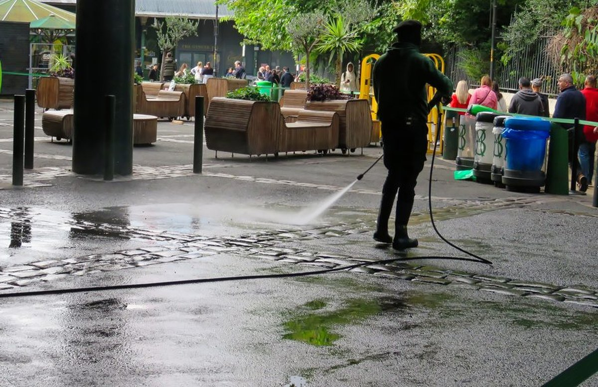

Limpeza e Manutenção
Orientações práticas para conservação doméstica, proteção respiratória, uso correto de produtos de limpeza e identificação de infiltrações.
Guias disponíveis nesta categoria

Ventilador fraco ou barulhento: como limpar peças e eixo com segurança
Aprenda a desmontar a grade com segurança fora da tomada, retirar cabelos do eixo e higienizar hélices para recuperar o vento forte.

Como limpar quintal, calçada com limo e ralos externos para evitar infiltração
Passo a passo para remover limo escorregadio de calçadas, liberar ralos de piso e prevenir umidade ascendente no rodapé.

Como limpar mofo da parede e controlar a umidade com segurança
Cuidados de proteção individual, alerta para nunca misturar água sanitária com outros produtos e quando chamar profissional para infiltração.
Equipamentos Mais Indicados para Limpeza no Mercado Livre
Transparência: Confira abaixo produtos com ótimo custo-benefício no Mercado Livre (links de afiliado) e análises completas no nosso site parceiro Achado Reviews.
Lavadora de Alta Pressão WAP WL 1800 (1400W / 1500 PSI)
Remove limo e sujeira encrustada de calçadas, muros e quintais economizando até 80% de água.
Aspirador de Pó e Água WAP GTW 10 Maré 1400W
Aspira sólidos e água acumulada em áreas de serviço, garagens e pequenos alagamentos.
Ventilador de Mesa 30cm Mondial Super Power 60W
Silencioso, econômico e fácil de desmontar e limpar as hélices e grades com água corrente.
Quer comparar antes de comprar? Veja os testes práticos no portal parceiro Achado Reviews: Melhor Lavadora de Alta Pressão, Melhores Eletrodomésticos até R$ 120 e Melhor Aspirador de Pó e Água.